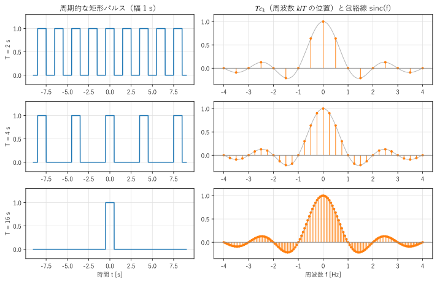
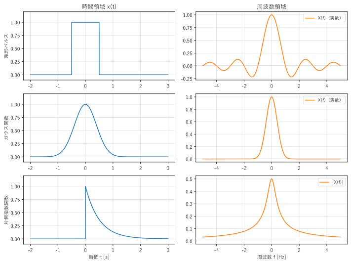
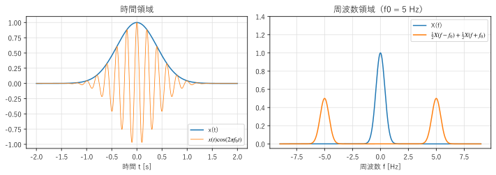
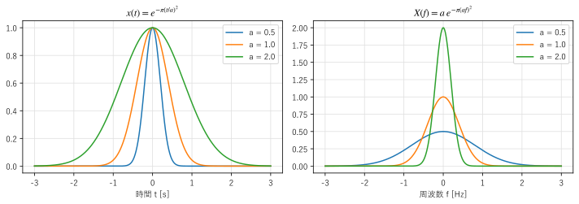

第 3 章 フーリエ変換
フーリエ級数は周期信号だけを対象としていた。しかし、1 回だけ鳴る音、パルス、過渡的な応答など、現実の多くの信号は周期をもたない。この章では、周期を無限に長くする考え方でフーリエ級数を拡張し、周期をもたない信号のスペクトルを求めるフーリエ変換を導く。
フーリエ級数からフーリエ変換へ
幅 1 s の矩形パルスを、周期 \(T\) で繰り返した信号を考える。第 2 章の式 (8) で係数を計算すると、
となる。\(T c_k\) を、それぞれの周波数 \(f_k = k/T\) の位置に描いたものが 図 8 である。周期 \(T\) を長くしていくと、線の間隔 \(1/T\) は狭くなるが、線の高さは常に \(\mathrm{sinc}(f)\) という同じ曲線の上に乗っている。\(T \to \infty\) の極限では、信号は 1 個のパルスになり、線スペクトルは連続な曲線 \(\mathrm{sinc}(f)\) になる。

図 8 周期的な矩形パルス（左）と、周期 \(T\) を掛けたフーリエ係数（右）
一般の信号でも同じである。\(T c_k = \int_{-T/2}^{T/2} x(t) e^{-j2\pi f_k t}\, dt\) の積分範囲を \(T \to \infty\) で全区間に広げ、離散的な周波数 \(f_k\) を連続な \(f\) に置き換えたものを、\(x(t)\) のフーリエ変換という。
逆に、フーリエ級数の和 \(x(t) = \sum_k (T c_k) e^{j2\pi f_k t} \cdot \frac{1}{T}\) で、\(1/T\) を周波数の刻み \(df\) とみなすと、和は積分になり、
が得られる。これを逆フーリエ変換という。式 (10) と式 (11) は、指数の符号が違うだけで、ほぼ対称な形をしている。本書では、\(x(t)\) と \(X(f)\) がフーリエ変換の対であることを \(x(t) \leftrightarrow X(f)\) と書く。
\(X(f)\) は一般に複素数であり、\(|X(f)|\) を振幅スペクトル、\(\arg X(f)\) を位相スペクトルという。フーリエ級数の \(c_k\) と比べると、\(X(f)\) は「周波数あたりの量」（スペクトルの密度）を表す。\(x(t)\) の単位が V なら、\(X(f)\) の単位は V/Hz（= V·s）になる。
注釈
フーリエ変換の定義には流儀がある。本書の式 (10) は周波数 \(f\) [Hz] を使う形で、逆変換に係数が付かない。角周波数 \(\omega = 2\pi f\) を使う流儀では
と書き、逆変換に \(1/(2\pi)\) が付く。数学の分野では、\(e^{-j}\) と \(e^{+j}\) の符号を逆にする流儀もある。教科書や論文を読むときは、どの定義を使っているかを最初に確かめるとよい。
フーリエ変換が存在するための十分条件として、\(x(t)\) が絶対可積分（\(\int |x(t)|\, dt < \infty\)）であることが知られている。正弦波や定数のように絶対可積分でない信号も、後で説明するデルタ関数を使えば、フーリエ変換を考えられる。
代表的なフーリエ変換の対
よく使うフーリエ変換の対を 表 1 にまとめる。\(u(t)\) は単位ステップ関数（\(t \ge 0\) で 1、\(t < 0\) で 0）、\(\mathrm{rect}(t)\) は幅 1 の矩形パルス（\(|t| < 1/2\) で 1、それ以外で 0）、\(\delta(t)\) は後で説明するデルタ関数である。
\(x(t)\) |
\(X(f)\) |
備考 |
|---|---|---|
\(\mathrm{rect}(t)\) |
\(\mathrm{sinc}(f) = \dfrac{\sin(\pi f)}{\pi f}\) |
矩形パルス |
\(e^{-\pi t^2}\) |
\(e^{-\pi f^2}\) |
ガウス関数 |
\(e^{-at} u(t)\)（\(a > 0\)） |
\(\dfrac{1}{a + j2\pi f}\) |
片側指数関数 |
\(\delta(t)\) |
\(1\) |
インパルス |
\(1\) |
\(\delta(f)\) |
直流 |
\(e^{j2\pi f_0 t}\) |
\(\delta(f - f_0)\) |
複素正弦波 |
\(\cos(2\pi f_0 t)\) |
\(\frac{1}{2}\delta(f - f_0) + \frac{1}{2}\delta(f + f_0)\) |
正弦波 |
矩形パルスのフーリエ変換は、前の節で極限として得た \(\mathrm{sinc}(f)\) である。直接計算しても、\(\int_{-1/2}^{1/2} e^{-j2\pi f t}\, dt = \sin(\pi f)/(\pi f)\) となる。この \(\mathrm{sinc}\) 関数（ sinc 関数）は、信号処理で何度も登場する。
ガウス関数 \(e^{-\pi t^2}\) は、フーリエ変換しても同じ形になるという特別な性質をもつ。片側指数関数は、RC 回路のインパルス応答などに現れる。
サンプルの fourier_transform_pairs.py は、式 (10) の積分を細かい刻みの長方形の和で近似し、上の表の最初の 3 つの対を確かめる。
69def fourier_transform(x: Signal, f: NDArray[np.float64], t_max: float = 20.0,
70 dt: float = 1e-3) -> NDArray[np.complex128]:
71 """x(t) のフーリエ変換を、-t_max から t_max までの長方形の和で近似する."""
72 t = np.arange(-t_max, t_max, dt) + dt / 2 # 各区間の中点
73 xt = x(t)
74 result: NDArray[np.complex128] = np.array([np.sum(xt * np.exp(-2j * np.pi * fk * t)) * dt for fk in f])
75 return result
|数値積分 - 理論値| の最大値（-5 Hz <= f <= 5 Hz）
2.36e-06 矩形パルス
1.22e-12 ガウス関数
1.31e-06 片側指数関数
いずれも数値積分と理論式がよく一致している。矩形パルスと片側指数関数の誤差がガウス関数より大きいのは、不連続点をもつ関数を長方形の和で近似した誤差である。図 9 に、3 つの信号の波形とスペクトルを示す。

図 9 代表的な信号（左）とそのフーリエ変換（右）
矩形パルスと片側指数関数のように、時間領域で急な変化（不連続点）をもつ信号は、周波数領域でゆっくり減衰する（\(1/|f|\) に比例する）。滑らかなガウス関数のスペクトルは非常に速く減衰する。第 2 章で述べた「滑らかさと減衰の速さ」の関係は、フーリエ変換でも成り立つ。
サンプルの全体：fourier_transform_pairs.py
フーリエ変換の性質
フーリエ変換には、計算を楽にする多くの性質がある。\(x(t) \leftrightarrow X(f)\)、\(y(t) \leftrightarrow Y(f)\) とし、\(a, b\) を定数とする。
性質 |
時間領域 |
周波数領域 |
|---|---|---|
線形性 |
\(a x(t) + b y(t)\) |
\(a X(f) + b Y(f)\) |
時間シフト |
\(x(t - t_0)\) |
\(e^{-j2\pi f t_0} X(f)\) |
周波数シフト（変調） |
\(e^{j2\pi f_0 t} x(t)\) |
\(X(f - f_0)\) |
スケーリング |
\(x(at)\)（\(a \ne 0\)） |
\(\dfrac{1}{|a|} X\!\left(\dfrac{f}{a}\right)\) |
共役対称性 |
\(x(t)\) が実数 |
\(X(-f) = X^*(f)\) |
微分 |
\(\dfrac{dx}{dt}\) |
\(j2\pi f\, X(f)\) |
畳み込み |
\((x * y)(t)\) |
\(X(f)\,Y(f)\) |
積 |
\(x(t)\,y(t)\) |
\((X * Y)(f)\) |
パーセバルの定理 |
\(\displaystyle\int |x(t)|^2 dt\) |
\(\displaystyle\int |X(f)|^2 df\) |
いくつかの性質について、意味を説明する。
時間シフト：信号を \(t_0\) だけ遅らせても、振幅スペクトル \(|X(f)|\) は変わらず、位相だけが周波数に比例して \(-2\pi f t_0\) 変化する。逆にいうと、位相が周波数に比例して変化することは、時間の遅れを意味する。この関係は、第 9 章の線形位相フィルタで重要になる。
周波数シフト（変調）：信号に複素正弦波 \(e^{j2\pi f_0 t}\) を掛けると、スペクトルが \(f_0\) だけ移動する。実数の余弦波を掛けた場合は、式 (2) から
となり、スペクトルが \(\pm f_0\) の 2 か所に半分ずつ移る（図 10）。これは、AM ラジオなどの変調の原理である。低い周波数の音声信号を、電波で送れる高い周波数の帯域に移している。

図 10 変調：ガウス関数に 5 Hz の余弦波を掛けた信号（左）と、そのスペクトル（右）
共役対称性：実数の信号では \(X(-f) = X^*(f)\) なので、\(|X(f)|\) は偶関数、\(\arg X(f)\) は奇関数になる。負の周波数の成分は正の周波数の成分から決まるので、実数の信号のスペクトルは \(f \ge 0\) の範囲だけを見れば十分である。
微分：微分は周波数領域では \(j2\pi f\) を掛けることになる。微分方程式がフーリエ変換で代数方程式に変わるのは、この性質による。また、高い周波数ほど強く強調されるので、微分は雑音を増幅しやすい。
パーセバルの定理：信号のエネルギーは、時間領域で計算しても周波数領域で計算しても同じである。\(|X(f)|^2\) は、エネルギーが周波数ごとにどう分布しているかを表し、エネルギースペクトル密度と呼ばれる。
畳み込みと畳み込み定理
2 つの信号 \(x(t)\) と \(h(t)\) の畳み込みを、次の式で定義する。
\(h\) を時間反転して \(t\) だけずらし、\(x\) と掛けて積分した値である。第 5 章で示すように、線形時不変システムの出力は、入力とインパルス応答の畳み込みで表される。畳み込みは信号処理で最も重要な演算の 1 つである。
畳み込みをフーリエ変換すると、次の畳み込み定理が得られる。
式 (12) を式 (10) に代入し、積分の順序を入れ替えて \(s = t - \tau\) と置くと、
となることから導ける。時間領域の畳み込みは、周波数領域では単なる掛け算になる。逆に、時間領域の積は、周波数領域の畳み込みになる（表 2 の「積」の行）。
畳み込み定理は、次の 2 つの意味で重要である。
システムの働きを、周波数ごとの「倍率」 \(H(f)\) として理解できる。\(H(f)\) が 0 に近い周波数の成分は、システムを通ると消える。これがフィルタの原理である。
畳み込みの計算を、フーリエ変換、掛け算、逆フーリエ変換で行える。第 7 章の FFT と組み合わせると、長い畳み込みを高速に計算できる（第 10 章）。
デルタ関数
デルタ関数 \(\delta(t)\) は、\(t = 0\) の一点にだけ集中した、面積 1 の「無限に細く高いパルス」を表す。厳密には通常の関数ではなく、次の性質で定義される（超関数と呼ばれる）。
任意の連続な関数 \(x(t)\) と掛けて積分すると、\(t = t_0\) の値を取り出す。この性質を、ふるい分け性という。直観的には、幅 \(\varepsilon\)、高さ \(1/\varepsilon\) の矩形パルスやガウス関数で、\(\varepsilon \to 0\) とした極限と考えてよい。
式 (14) から、\(\delta(t)\) のフーリエ変換は \(\int \delta(t) e^{-j2\pi f t} dt = 1\) であり、すべての周波数を同じ大きさで含む。逆に、定数 1 のフーリエ変換は \(\delta(f)\) である（周波数 0 の成分だけをもつ）。さらに周波数シフトの性質から、複素正弦波 \(e^{j2\pi f_0 t}\) のフーリエ変換は \(\delta(f - f_0)\) となり、正弦波のスペクトルは \(\pm f_0\) の 2 本の線になる。デルタ関数を使うと、フーリエ級数の線スペクトルも、フーリエ変換の特別な場合として扱える。
デルタ関数を間隔 \(T_s\) で無限に並べた関数
をくし形関数という。くし形関数のフーリエ変換は、間隔 \(1/T_s\) で並んだくし形関数になる。
くし形関数は周期 \(T_s\) の周期関数なので、フーリエ級数で展開すると、すべての係数が \(c_k = 1/T_s\) になる（1 周期にデルタ関数が 1 個だけあるので、式 (8) の積分は \(1/T_s\) になる）。各項 \(\frac{1}{T_s}e^{j2\pi k t/T_s}\) のフーリエ変換は \(\frac{1}{T_s}\delta(f - k/T_s)\) なので、式 (15) が得られる。この関係は、第 4 章で標本化を解析するときに使う。
時間幅と帯域幅の関係
スケーリングの性質 \(x(at) \leftrightarrow \frac{1}{|a|}X(f/a)\) は、「信号を時間方向に縮めると、スペクトルは周波数方向に広がる」ことを表す。図 11 は、ガウス関数 \(e^{-\pi (t/a)^2}\) の幅 \(a\) を変えたときの様子である。時間領域で幅が狭いパルスほど、周波数領域では広い範囲に広がる。

図 11 ガウス関数の時間幅（左）とスペクトルの幅（右）
信号の時間的な広がりを \(\Delta t\)、周波数の広がり（帯域幅）を \(\Delta f\) とすると、両者の積には下限がある。広がりを標準偏差で測る場合、
が成り立ち、等号はガウス関数のときに成り立つ。これを不確定性関係（不確定性原理）という。「時間的に短く、かつ周波数の範囲も狭い信号」は作れないということである。この関係は、第 8 章で、短時間フーリエ変換の時間分解能と周波数分解能のトレードオフとして再び現れる。
まとめ
フーリエ変換 \(X(f) = \int x(t) e^{-j2\pi f t} dt\) は、周期をもたない信号のスペクトルを表す。フーリエ級数で周期を無限に長くした極限として得られる。
矩形パルスのフーリエ変換は sinc 関数、ガウス関数のフーリエ変換はガウス関数、正弦波のフーリエ変換はデルタ関数の対である。
時間シフトは位相の変化に、変調はスペクトルの移動に、微分は \(j2\pi f\) の掛け算に対応する。
時間領域の畳み込みは、周波数領域の掛け算になる（畳み込み定理）。
時間幅と帯域幅は反比例の関係にあり、両方を同時に小さくすることはできない。